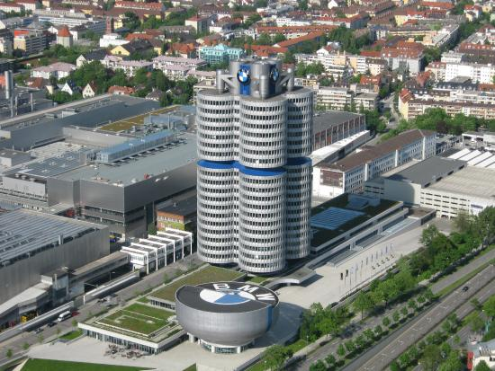
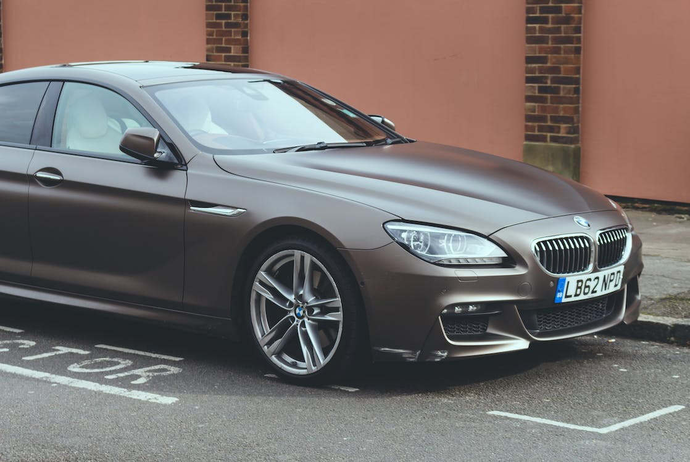
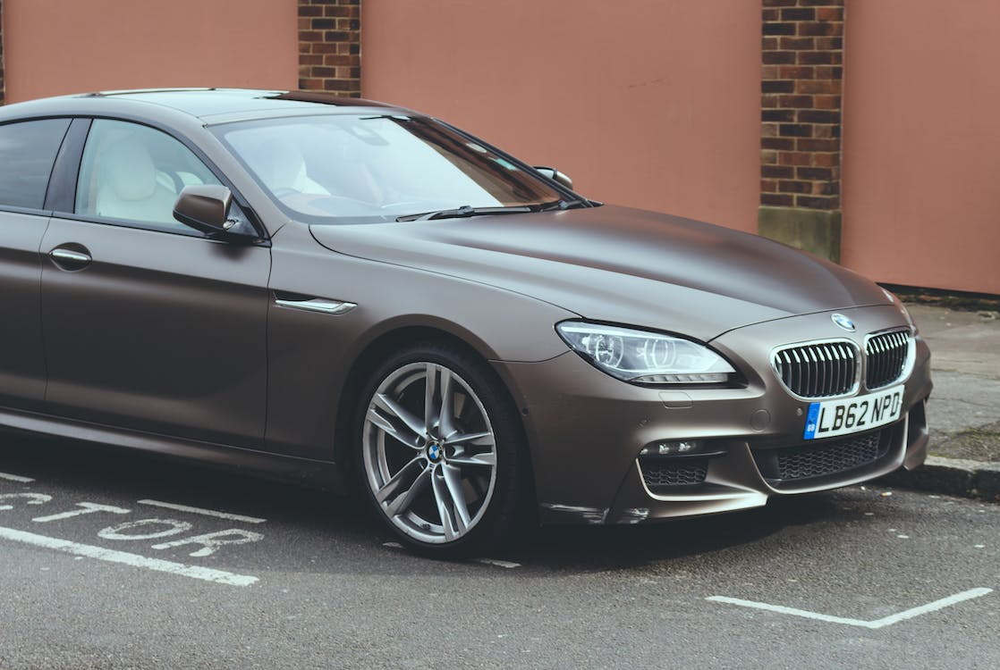

BMW Cars
The BMW name stands for Bayerische Motoren Werke GmbH.
BMW was created in 1917 from the Munich firm Rapp-Motorenwerke.
The company was incorporated into Knorr-Bremse AG in 1920 before being refounded as BMW AG in 1922.
It was the successor of Bayerische Flugzeugwerke AG, founded in 1916
BMW Founder
BMW was founded by Karl Rapp
BMW headquarteres and long term investors
BMW is headquartered in Munich and produces motor vehicles in Germany, Brazil, China, India, Mexico,
the Netherlands, South Africa, the United Kingdom, and the United States. The Quandt family
is a long-term shareholder of the company, following investments by the brothers Herbert and Harald
Quandt in 1959 that saved BMW from bankruptcy, with the remaining shares owned by the public.

Why BMW
BMWs are equipped with some of the most advanced safety features in the industry,
ensuring maximum protection for you and your passengers. From Dynamic Stability Control (DSC)
and Anti-lock Braking System (ABS) to a suite of airbags and advanced crumple zone design, every
BMW is designed to safeguard its occupants.
Other Reasons could be:
- Performance and Handling
BMW vehicles are famous for their high-performance engines and precise handling,
which combine to create a thrilling driving experience. BMW engineers focus on ensuring that the suspension
systems are well-balanced and that the steering is responsive to achieve this.
- Luxury and Comfort
BMW vehicles provide a luxurious driving experience with interiors that are designed to maximize comfort and convenience.
The interiors of BMW cars showcase top-quality materials, such as premium leather and real wood accents, combined with
advanced technologies like the brand’s iDrive infotainment system and premium sound systems
- Build Quality
BMW is renowned for its commitment to producing high-quality, meticulously crafted cars.
The brand has a reputation for constructing vehicles that are exceptionally durable, long-lasting,
and well-engineered. BMW uses premium materials during the manufacturing process, and each car undergoes rigorous
testing to ensure that it meets the brand’s exacting standards. In addition to producing top-quality cars, BMW
also provides extensive aftersales support. This includes a comprehensive warranty and maintenance program,
designed to keep cars in excellent condition for many years.
- Brand Reputation
BMW’s brand reputation is a testament to its strong heritage and unwavering commitment to producing high-quality,
stylish, and technologically advanced vehicles. The brand has established a loyal customer base by consistently
delivering exceptional performance, innovative designs, and unparalleled attention to detail over the years.
- Resale Value
BMW’s strong resale value is a key factor for many consumers when deciding on a vehicle, and for good reason.
The resale value of a BMW is influenced by various factors, including the model, age, condition, and demand for that model.
Feel free to explore and leave your comments!

 
